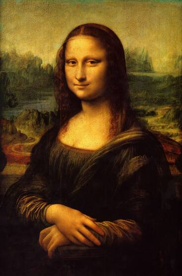
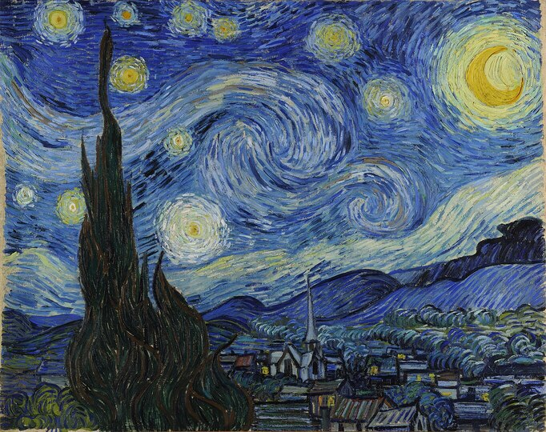
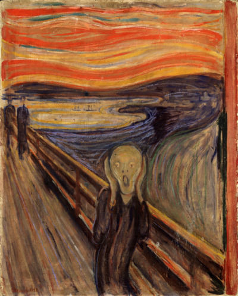

Historia de "La Mona Lisa"

Desde el siglo XVI, la sonrisa de la Mona Lisa ha intrigado al mundo. Leonardo da Vinci la pintó entre 1503 y 1506, usando una técnica revolucionaria para su tiempo: el sfumato, que suaviza los bordes y crea esa sensación de vida que parece respirar desde el cuadro.
Más allá de los misterios sobre quién fue la modelo, la obra representa la búsqueda renacentista de la perfección, el equilibrio entre razón y belleza.
Hoy, tras siglos de historia, sigue mirándonos con esa expresión que parece cambiar cada vez que la observamos.
La noche estrellada: el caos y la belleza según Van Gogh

Pintada en 1889, La noche estrellada es una de las obras más icónicas de Vincent van Gogh y una de las más reconocibles de toda la historia del arte.
Con su torbellino de colores y formas, el cuadro representa mucho más que un paisaje nocturno: es una mirada al interior del alma del artista, donde la emoción y la turbulencia se mezclan con una profunda sensibilidad por la naturaleza.
El nacimiento de Venus: cuando la belleza emergió del mar
 Dicen que la belleza nació de las olas. En El nacimiento de Venus, Sandro Botticelli capturó ese instante en que la diosa del amor se eleva sobre una concha, impulsada por el viento y bañada en luz.
Pintada alrededor de 1485, esta obra se convirtió en el símbolo por excelencia del Renacimiento italiano: un tiempo en el que la mitología, el arte y la filosofía se reencontraron con la idea de lo divino en lo humano.
Dicen que la belleza nació de las olas. En El nacimiento de Venus, Sandro Botticelli capturó ese instante en que la diosa del amor se eleva sobre una concha, impulsada por el viento y bañada en luz.
Pintada alrededor de 1485, esta obra se convirtió en el símbolo por excelencia del Renacimiento italiano: un tiempo en el que la mitología, el arte y la filosofía se reencontraron con la idea de lo divino en lo humano.
El Grito: el eco del miedo interior

Hay emociones que se sienten y hay emociones que gritan.
En El Grito, Edvard Munch no retrató simplemente a una persona, sino la angustia que nos habita a todos.
Cada línea ondulada es un latido acelerado, cada color un grito silencioso que se convierte en tormenta.
Realizado en 1893, esta obra es un símbolo universal del miedo, la ansiedad y la vulnerabilidad: el reflejo del alma humana enfrentada a su propia fragilidad y a la incertidumbre de la vida.
La persistencia de la memoria: el tiempo que se derrite, Salvador Dalí
 Hay momentos que parecen eternos y hay recuerdos que se deshacen.
En La persistencia de la memoria, Salvador Dalí no pintó relojes ni paisajes al azar, sino la percepción subjetiva del tiempo que habita en nuestra mente.
Cada reloj blando, cada sombra estirada, cada línea surrealista es una metáfora de cómo la memoria y la conciencia se deforman, se estiran y se diluyen.
Realizada en 1931, esta obra se convirtió en un ícono del surrealismo: un puente entre la lógica aparente del mundo y los laberintos del subconsciente.
Hay momentos que parecen eternos y hay recuerdos que se deshacen.
En La persistencia de la memoria, Salvador Dalí no pintó relojes ni paisajes al azar, sino la percepción subjetiva del tiempo que habita en nuestra mente.
Cada reloj blando, cada sombra estirada, cada línea surrealista es una metáfora de cómo la memoria y la conciencia se deforman, se estiran y se diluyen.
Realizada en 1931, esta obra se convirtió en un ícono del surrealismo: un puente entre la lógica aparente del mundo y los laberintos del subconsciente.